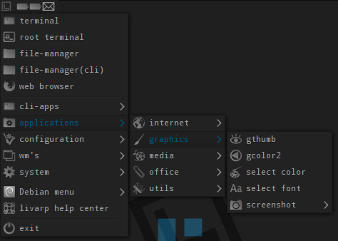
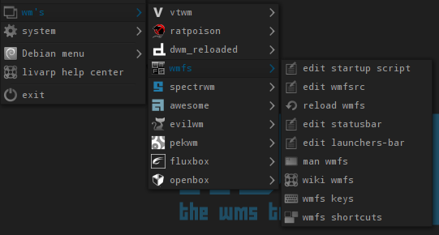

lang fr|gb

les menus
certains gestionnaires de fenêtres utilisés dans livarp intègrent un menu: vtwm, awesome, fluxbox, openbox et pekwm
afin de faciliter l'accès aux applications, livarp utilise 2 menus indépendants en plus des menus intégrés aux gestionnaires de fenêtres:
dmenu
le menu dynamique universel disponible dans toutes les sessions depuis différents raccourcis clavier.
fbpanel
fournit un menu intégrant le menu Debian disponible dans toutes les sessions au coin supérieur gauche de l'écran:



fbpanel n'est pas auto-généré (vous devrez ajouter l'entrée si vous installez une application), mais une entrée permet d'éditer le fichier de configuration du profil de fbpanel.